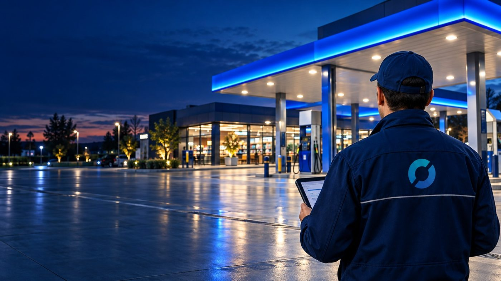

BİGEL CLEAN — Multi-site exterior cleaning
The same standard at every site.
We manage the exterior cleaning operations of brands with widespread physical sites across Türkiye, to one standard. A defined scope for every site, photo evidence for every visit.
As sites multiply, the standard drifts.
Different crews, changing methods and scattered reporting cause deviations in brand appearance. BİGEL CLEAN brings it all under one model.
- Common service definition and application standard
- Central task and visit planning
- Fast site access through regional teams
- Before and after photo evidence
- Site and regional performance visibility

A defined method, equipment and photo angle for every area.
Modules can be one-off or part of a periodic programme.
Canopy Clean
Periodic removal of atmospheric dirt, dust, exhaust marks, soot and biological soiling.
Signage & Totem Clean
Surface-appropriate cleaning of signs, totems and wayfinding that affect brand visibility.
Floor & Car Park Clean
Dirt, oil stains and litter on concrete, asphalt, pavers, epoxy and stone.
Glass & Façade Clean
Shopfronts, entrance glass, curtain walls, composite, metal, stone and painted surfaces.
Event Clean
Pre-event preparation, support during the event and post-event closing clean.
Night Clean
Cleaning scheduled after closing hours without disrupting operations.
Emergency Clean
Sudden soiling, spills, bad weather, vandalism or pre-audit rapid response.
Seasonal Clean
Programmes built around winter grime, moss, leaves, mud and slip risks.
Every visit runs on the same digital flow.
Task scope
Site information and defined service.
Before photo
Baseline record from standard angles.
Execution
Method, equipment and chemical standard.
After photo
Checklist and quality criteria.
Completion
Findings reported, closure recorded.
Performance is tracked with jointly defined KPIs and SLAs.
From a single job to an annual contract.
Site-based service
A single planned application for a specific site and visit scope.
Periodic package
Monthly, bi-monthly, quarterly or seasonal visit programme. Modules combined as needed.
Annual multi-site contract
Annual calendar for all sites, service scope, SLA targets and central reporting.
Pricing is based on number of sites, area and surface type, visit frequency, equipment needs and access conditions. A pilot confirms the final unit price.

One standard across the network, on behalf of head office.
In franchise structures, every branch cleaning differently creates inconsistency in brand appearance. BİGEL CLEAN works with head office under one contract and one service definition.
- A common checklist for all sites
- Standard photo angles and quality criteria
- Site-level scores and non-conformity tracking
- Comparative dashboard for head office
Let's design your field operation together.
We start with a pilot on selected sites and scale to regional or nationwide operations based on the results.